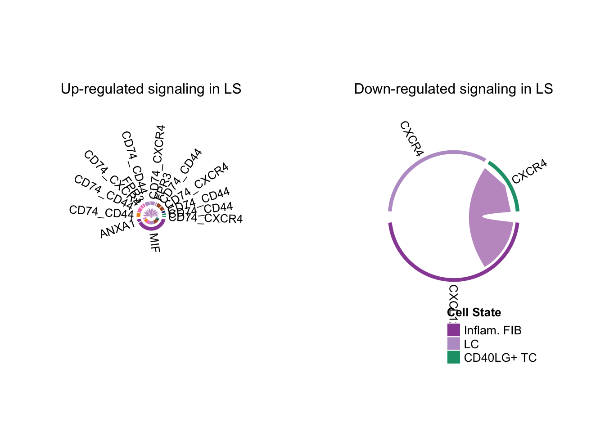

第 13 章 cellchat 多数据集对比分析
本教程展示如何运用 CellChat 通过定量对比和联合流形学习，识别不同生物学条件下的主要信号变化。我们以特应性皮炎患者的非皮损（NL，正常）和皮损（LS，病变）人皮肤单细胞 RNA 测序数据集为例，演示 CellChat 在跨条件识别主要信号变化时的多样化功能。这两个数据集（条件）在联合聚类后具有相同的细胞群组成。
CellChat 采用自上而下的方法，即从宏观视角出发，逐步细化至信号传导机制的细节层面，以识别不同层次上的信号变化，包括交互作用、细胞群体、信号通路及配体-受体对的改变。
13.1 加载各数据集的 CellChat 对象并合并
需先对每个数据集单独运行 CellChat，随后合并不同的 CellChat 对象。若 CellChat 对象是通过早期版本（<1.6.0）获取的，请执行 updateCellChat 操作。
13.2 识别改变的互作与细胞群体
CellChat 采用自上而下的方法，即从宏观视角出发，逐步细化信号传导机制，以识别不同层面的信号变化，包括改变的相互作用、细胞群体、信号通路和配体-受体对。首先，CellChat 从宏观角度出发，回答以下问题：
细胞与细胞之间的交流是否得到加强
哪些细胞类型之间的相互作用发生了显著变化
主要来源和目标如何从一个条件变化到另一个条件
13.2.2 比较不同细胞群体间的相互作用数量及相互作用强度
为了识别哪些细胞群体之间的相互作用显示出显著变化，CellChat 通过以下方式比较不同细胞群体间的相互作用数量和强度：使用差异相互作用的环形图（选项 A）、差异相互作用的热图（选项 B）以及展示每个数据集中相互作用数量或强度的双环形图（选项 C）。此外，用户还可以通过基于定义的细胞群汇总细胞间通讯，来检查粗略细胞类型之间相互作用数量或强度的差异（选项 D）。
13.2.2.1 (A) 圆形图展示两个数据集中不同细胞群体间相互作用数量或强度的差异
两个数据集间细胞-细胞通讯网络中相互作用数量或强度的差异可通过圆形图可视化，其中 red （或 blue）色边代表相较于第一个数据集，第二个数据集中的 increased（或 decreased）信号传导。
13.2.2.2 (B) 热图展示两个数据集中不同细胞群之间相互作用数量或强度的差异
CellChat 还可以通过热图更详细地展示交互数量或交互强度的差异。顶部彩色条形图表示热图中显示的绝对值每列的总和（传入信号）。右侧彩色条形图表示绝对值每行的总和（传出信号）。因此，条形高度表示两种条件下交互数量或交互强度的变化程度。在颜色条中， red（或 blue）表示与第一个数据集相比，第二个数据集中的 increased（或 decreased）信号。
13.2.2.3 (C) 圆形图展示多个数据集中不同细胞群之间的相互作用数量或相互作用强度
上述差异网络分析仅适用于两两数据集间的比较。若有更多数据集需要对比，CellChat 可直接展示各数据集中任意两个细胞群之间的相互作用数量或相互作用强度。 为了更好地控制不同数据集中推断网络的节点大小和边权重，CellChat 会计算所有数据集中每个细胞组的最大细胞数量以及最大相互作用数量（或相互作用权重）。
weight.max <- getMaxWeight(object.list, attribute = c("idents","count"))
par(mfrow = c(1,2), xpd=TRUE)
for (i in 1:length(object.list)) {
netVisual_circle(object.list[[i]]@net$count, weight.scale = T, label.edge= F, edge.weight.max = weight.max[2], edge.width.max = 12, title.name = paste0("Number of interactions - ", names(object.list)[i]))
}13.2.2.4 (D) 展示粗略细胞类型间相互作用数量或相互作用强度差异的圆形图
为简化复杂网络并获取细胞类型水平上细胞间通讯的深入理解，CellChat 基于定义的细胞群对细胞间通讯进行聚合。此处我们将细胞群体划分为三种细胞类型，随后重新合并 CellChat 对象列表。
group.cellType <- c(rep("FIB", 4), rep("DC", 4), rep("TC", 4))
group.cellType <- factor(group.cellType, levels = c("FIB", "DC", "TC"))
object.list <- lapply(object.list, function(x) {mergeInteractions(x, group.cellType)})
cellchat <- mergeCellChat(object.list, add.names = names(object.list))随后我们可展示各数据集中任意两种细胞类型间的相互作用数量或相互作用强度。
weight.max <- getMaxWeight(object.list, slot.name = c("idents", "net", "net"), attribute = c("idents","count", "count.merged"))
par(mfrow = c(1,2), xpd=TRUE)
for (i in 1:length(object.list)) {
netVisual_circle(object.list[[i]]@net$count.merged, weight.scale = T, label.edge= T, edge.weight.max = weight.max[3], edge.width.max = 12, title.name = paste0("Number of interactions - ", names(object.list)[i]))
}类似地，CellChat 还能通过圆形图展示任意两种细胞类型间相互作用数量或强度的差异。红色（或蓝色）边表示与第一个数据集相比，第二个数据集中信号传导的增加（或减少）。
13.2.3 在二维空间中比较主要来源和目标
在二维空间中比较传出与传入的相互作用强度，可轻松识别不同数据集间信号发送或接收发生显著变化的细胞群体。
通过选项 A 识别不同数据集间信号发送或接收发生显著变化的细胞群体，通过选项 B 追踪特定细胞群体的信号变化。
13.2.3.1 (A) 识别信号发送或接收发生显著变化的细胞群体
num.link <- sapply(object.list, function(x) {rowSums(x@net$count) + colSums(x@net$count)-diag(x@net$count)})
weight.MinMax <- c(min(num.link), max(num.link)) # control the dot size in the different datasets
gg <- list()
for (i in 1:length(object.list)) {
gg[[i]] <- netAnalysis_signalingRole_scatter(object.list[[i]], title = names(object.list)[i], weight.MinMax = weight.MinMax)
}
patchwork::wrap_plots(plots = gg)从散点图可见，与 NL 相比，Inflam.DC 和 cDC1 成为 LS 中主要信号源及靶标之一。成纤维细胞群体亦成为 LS 中的主要信号源。
13.3 识别具有不同网络架构及相互作用强度的信号变化
CellChat 随后可识别网络差异较大（或较小）的信号通路，并根据其在多种生物学条件下的功能或结构相似性对信号组进行分类。
13.3.1 识别差异较大（或较小）的信号网络，并基于其功能/结构相似性划分信号组
CellChat 基于不同条件下推断出的通信网络的功能及拓扑相似性，执行联合流形学习与分类。注：此类分析适用于两个以上的数据集。
通过量化不同条件下细胞通讯网络中信号通路的相似性，该分析揭示了可能发生改变的信号通路。CellChat 借鉴了网络生物学中的网络重构概念，并假设不同通讯网络间的差异可能会影响跨条件的生物学过程。UMAP 用于可视化信号关系，并以直观方式解释信号输出结果，无需涉及条件分类。
功能相似性：高度的功能相似性表明主要发送者和接收者相似，可解释为两个信号通路或两个配体-受体对具有相似和/或冗余的作用。注意：功能相似性分析不适用于具有不同细胞类型组成的多重数据集。
结构相似性：采用结构相似性比较其信号网络结构，未考虑发送者与接收者的相似性。注：结构相似性分析适用于具有相同细胞类型组成或细胞类型组成差异极大的多个数据集。
由于这两个数据集具有相同的细胞类型组成，我们可以基于功能相似性进行流形学习和分类分析。
13.3.1.1 基于功能相似性识别信号组
cellchat <- computeNetSimilarityPairwise(cellchat, type = "functional")
cellchat <- netEmbedding(cellchat, type = "functional")
cellchat <- netClustering(cellchat, type = "functional")
netVisual_embeddingPairwise(cellchat, type = "functional", label.size = 3.5)
netVisual_embeddingZoomIn(cellchat, type = "functional", nCol = 2)13.3.1.2 基于结构相似性识别信号组
cellchat <- computeNetSimilarityPairwise(cellchat, type = "structural")
cellchat <- netEmbedding(cellchat, type = "structural")
cellchat <- netClustering(cellchat, type = "structural")
netVisual_embeddingPairwise(cellchat, type = "structural", label.size = 3.5)
netVisual_embeddingPairwiseZoomIn(cellchat, type = "structural", nCol = 2)13.3.2 识别具有不同交互强度的改变信号
通过比较每个信号通路的信息流/交互强度，CellChat 识别出以下信号通路：(i) 关闭，(ii) 减少，(iii) 打开，或 (iv) 增加，通过在一个条件下与另一个条件相比改变其信息流。根据整体信息流通过选项 A 识别改变的信号通路或配体-受体对，并根据外发（或内收）信号模式通过选项 B 进行识别。
13.3.2.1 (A) 比较每个信号通路或配体-受体对的整体信息流
CellChat 可以通过简单地比较每个信号通路的信息流来识别保守和特定上下文的信号通路，这由推断网络中所有细胞组对之间的通信概率之和定义（即网络中的总权重）。
该条形图可以以堆叠模式绘制或不绘制。根据 NL 和 LS 皮肤之间推断网络中整体信息流的差异，对显著的信号通路进行了排名。当设置 do.stat = TRUE 时，进行配对 Wilcoxon 检验以确定两种条件之间的信号信息流是否存在显著差异。红色标记的顶级信号通路在 NL 皮肤中富集，而绿色标记的则在 LS 皮肤中富集。
13.3.2.2 (B) 比较与每个细胞群体相关的外向（或内向）信号模式
上述分析总结了外向和内向信号的信息。CellChat 还可以比较两个数据集之间的外向（或内向）信号模式，从而识别表现出不同信号模式的信号通路/配体-受体。我们可以将来自不同数据集的所有识别信号通路结合在一起，从而并排比较它们，包括外向信号、内向信号和通过将外向和内向信号聚合在一起得到的整体信号。
CellChat 使用热图绘制信号（信号通路或配体-受体对）对细胞群体的贡献，显示出外发或接收信号。在此热图中，颜色条表示信号通路在细胞群体中的相对信号强度（注意值是行缩放的）。顶部的彩色条形图通过汇总热图中显示的所有信号通路，显示细胞群体的总信号强度。右侧的灰色条形图通过汇总热图中显示的所有细胞群体，显示信号通路的总信号强度。
library(ComplexHeatmap)
pathway.union <- union(object.list[[i]]@netP$pathways, object.list[[i+1]]@netP$pathways)
ht1 = netAnalysis_signalingRole_heatmap(object.list[[i]], pattern = "outgoing", signaling = pathway.union, title = names(object.list)[i], width = 5, height = 6)
ht2 = netAnalysis_signalingRole_heatmap(object.list[[i+1]], pattern = "outgoing", signaling = pathway.union, title = names(object.list)[i+1], width = 5, height = 6)
draw(ht1 + ht2, ht_gap = unit(0.5, "cm"))ht1 = netAnalysis_signalingRole_heatmap(object.list[[i]], pattern = "incoming", signaling = pathway.union, title = names(object.list)[i], width = 5, height = 6, color.heatmap = "GnBu")
ht2 = netAnalysis_signalingRole_heatmap(object.list[[i+1]], pattern = "incoming", signaling = pathway.union, title = names(object.list)[i+1], width = 5, height = 6, color.heatmap = "GnBu")
draw(ht1 + ht2, ht_gap = unit(0.5, "cm"))ht1 = netAnalysis_signalingRole_heatmap(object.list[[i]], pattern = "all", signaling = pathway.union, title = names(object.list)[i], width = 5, height = 6, color.heatmap = "OrRd")
ht2 = netAnalysis_signalingRole_heatmap(object.list[[i+1]], pattern = "all", signaling = pathway.union, title = names(object.list)[i+1], width = 5, height = 6, color.heatmap = "OrRd")
draw(ht1 + ht2, ht_gap = unit(0.5, "cm"))13.4 识别上调和下调的信号配体-受体对
13.4.1 通过比较通信概率来识别功能失调的信号传导
CellChat 可以比较某些细胞群体与其他细胞群体之间由 L-R 对介导的通信概率。这可以通过在函数 netVisual_bubble 中设置 comparison 来完成。
netVisual_bubble(cellchat, sources.use = 4, targets.use = c(5:11), comparison = c(1, 2), angle.x = 45)此外，CellChat 可以识别在一个数据集中上调（增加）和下调（减少）的信号配体-受体对，与另一个数据集进行比较。这可以通过在函数netVisual_bubble 中指定 max.dataset 和 min.dataset 来完成。增加的信号意味着这些信号在第二个数据集中相较于第一个数据集具有更高的通信概率（强度）。气泡图中显示的配体-受体对可以通过 gg1$data 访问。
gg1 <- netVisual_bubble(cellchat, sources.use = 4, targets.use = c(5:11), comparison = c(1, 2), max.dataset = 2, title.name = "Increased signaling in LS", angle.x = 45, remove.isolate = T)
gg2 <- netVisual_bubble(cellchat, sources.use = 4, targets.use = c(5:11), comparison = c(1, 2), max.dataset = 1, title.name = "Decreased signaling in LS", angle.x = 45, remove.isolate = T)
gg1 + gg213.4.2 通过使用差异表达分析识别功能失调的信号传导
上述识别上调和下调信号传导的方法是通过比较两个数据集之间每对 L-R 配对和每对细胞组的通信概率来进行的。或者，我们可以基于差异表达分析（DEA）识别上调和下调的信号配体-受体对。具体而言，我们在每个细胞组之间对两种生物条件（即 NL 和 LS）进行差异表达分析，然后根据发送细胞中配体和接收细胞中受体的倍数变化获得上调和下调的信号。
值得注意的是，用户可能会观察到相同的 LR 对出现在上调和下调的结果中，因为在每个细胞组中进行条件之间的 DEA。要在忽略细胞组信息的情况下进行条件之间的 DEA，用户可以在 CellChat v2.1.1 中将 identifyOverExpressedGenes 设置为 group.DE.combined = TRUE 。
# 定义一个正数据集，即相对于另一个数据集具有正倍数变化的数据集
pos.dataset = "LS"
# 定义一个字符名称，用于存储差异表达分析的结果
features.name = paste0(pos.dataset, ".merged")
# 执行差异表达分析
# 值得注意的是，与 CellChat 版本 < v2 相比，CellChat v2 现在使用 presto 包执行超快速的 Wilcoxon 检验，这会产生更小的 logFC 值。因此，我们在这里设置了一个比原始值更小的 thresh.fc 值（thresh.fc = 0.1）。用户还可以通过修改 cellchat@var.features$LS.merged 和 cellchat@var.features$LS.merged.info 来提供自定义 DEG 的向量和数据框。
cellchat <- identifyOverExpressedGenes(cellchat, group.dataset = "datasets", pos.dataset = pos.dataset, features.name = features.name, only.pos = FALSE, thresh.pc = 0.1, thresh.fc = 0.05,thresh.p = 0.05, group.DE.combined = FALSE)
# 将差异表达分析的结果映射到推断的细胞间通讯上，以便轻松管理/筛选感兴趣的配体-受体对
net <- netMappingDEG(cellchat, features.name = features.name, variable.all = TRUE)
# 提取在 LS 中配体上调的配体-受体对
net.up <- subsetCommunication(cellchat, net = net, datasets = "LS",ligand.logFC = 0.05, receptor.logFC = NULL)
# 提取在 LS 中配体下调的配体-受体对
net.down <- subsetCommunication(cellchat, net = net, datasets = "NL",ligand.logFC = -0.05, receptor.logFC = NULL)由于 net.up 和 net.down 中的信号基因可能是由多个亚单位组成的复杂结构，我们可以进一步进行解卷积以获得单个信号基因。
gene.up <- extractGeneSubsetFromPair(net.up, cellchat)
gene.down <- extractGeneSubsetFromPair(net.down, cellchat)用户还可以根据自定义特征和感兴趣的小区组找到所有重要的外发/入站/双向信号
13.4.3 可视化识别出的上调和下调的信号配体-受体对
CellChat 可以使用气泡图（选项 A）、和弦图（选项 B）或词云（选项 C）可视化识别出的上调和下调的信号配体-受体对。
13.4.3.1 (A) 气泡图
我们使用气泡图或和弦图可视化上调和下调的信号配体-受体对。
pairLR.use.up = net.up[, "interaction_name", drop = F]
gg1 <- netVisual_bubble(cellchat, pairLR.use = pairLR.use.up, sources.use = 4, targets.use = c(5:11), comparison = c(1, 2), angle.x = 90, remove.isolate = T,title.name = paste0("Up-regulated signaling in ", names(object.list)[2]))
pairLR.use.down = net.down[, "interaction_name", drop = F]
gg2 <- netVisual_bubble(cellchat, pairLR.use = pairLR.use.down, sources.use = 4, targets.use = c(5:11), comparison = c(1, 2), angle.x = 90, remove.isolate = T,title.name = paste0("Down-regulated signaling in ", names(object.list)[2]))
gg1 + gg213.4.3.2 (B) 和弦图
使用 Chord 图可视化上调和下调的信号配体-受体对
# Chord diagram
par(mfrow = c(1,2), xpd=TRUE)
netVisual_chord_gene(object.list[[2]], sources.use = 4, targets.use = c(5:11), slot.name = 'net', net = net.up, lab.cex = 0.8, small.gap = 3.5, title.name = paste0("Up-regulated signaling in ", names(object.list)[2]))
netVisual_chord_gene(object.list[[1]], sources.use = 4, targets.use = c(5:11), slot.name = 'net', net = net.down, lab.cex = 0.8, small.gap = 3.5, title.name = paste0("Down-regulated signaling in ", names(object.list)[2]))
13.5 使用层次图、圆形图或和弦图可视化比较细胞间通信
类似于对单个数据集的 CellChat 分析，CellChat 可以使用层次图、圆形图、和弦图或热图直观地比较细胞间通信网络。有关可视化的更多细节可以在单个数据集的 CellChat 分析中找到。
边缘颜色/权重，节点颜色/大小/形状：在所有可视化图中，边缘颜色与作为发送者的源一致，边缘权重与交互强度成正比。边缘线越粗表示信号越强。在层次图和圆形图中，圆的大小与每个细胞组中的细胞数量成正比。在层次图中，实心圆和空心圆分别表示源和目标。在和弦图中，内侧较细的条形颜色表示接收来自相应外侧条形信号的目标。内侧条形的大小与目标接收到的信号强度成正比。这种内侧条形有助于解释复杂的和弦图。请注意，某些细胞组存在没有和弦的内侧条形，请忽略它，因为这是 circlize 包尚未解决的问题。
pathways.show <- c("CXCL")
weight.max <- getMaxWeight(object.list, slot.name = c("netP"), attribute = pathways.show) # control the edge weights across different datasets
par(mfrow = c(1,2), xpd=TRUE)
for (i in 1:length(object.list)) {
netVisual_aggregate(object.list[[i]], signaling = pathways.show, layout = "circle", edge.weight.max = weight.max[1], edge.width.max = 10, signaling.name = paste(pathways.show, names(object.list)[i]))
}pathways.show <- c("CXCL")
par(mfrow = c(1,2), xpd=TRUE)
ht <- list()
for (i in 1:length(object.list)) {
ht[[i]] <- netVisual_heatmap(object.list[[i]], signaling = pathways.show, color.heatmap = "Reds",title.name = paste(pathways.show, "signaling ",names(object.list)[i]))
}
ComplexHeatmap::draw(ht[[1]] + ht[[2]], ht_gap = unit(0.5, "cm"))# Chord diagram
pathways.show <- c("CXCL")
par(mfrow = c(1,2), xpd=TRUE)
for (i in 1:length(object.list)) {
netVisual_aggregate(object.list[[i]], signaling = pathways.show, layout = "chord", signaling.name = paste(pathways.show, names(object.list)[i]))
}对于和弦图，CellChat 具有独立的功能 netVisual_chord_cell ，可以通过调整 circlize 包中的不同参数灵活地可视化信号网络。例如，我们可以定义一个命名的字符向量 group 来创建多组和弦图，例如，将细胞簇分组为不同的细胞类型。
# Chord diagram
group.cellType <- c(rep("FIB", 4), rep("DC", 4), rep("TC", 4)) # grouping cell clusters into fibroblast, DC and TC cells
names(group.cellType) <- levels(object.list[[1]]@idents)
pathways.show <- c("CXCL")
par(mfrow = c(1,2), xpd=TRUE)
for (i in 1:length(object.list)) {
netVisual_chord_cell(object.list[[i]], signaling = pathways.show, group = group.cellType, title.name = paste0(pathways.show, " signaling network - ", names(object.list)[i]))
}使用和弦图，CellChat 提供了两个功能 netVisual_chord_cell 和 netVisual_chord_gene 用于以不同目的和不同层次可视化细胞间通信。 netVisual_chord_cell 用于可视化不同细胞组之间的细胞间通信（和弦图中的每个扇区是一个细胞组），而 netVisual_chord_gene 用于可视化由多个配体-受体或信号通路介导的细胞间通信（和弦图中的每个扇区是一个配体、受体或信号通路）。
par(mfrow = c(1, 2), xpd=TRUE)
# 比较从 Inflam.FIB 发送到 DC 细胞的所有交互
for (i in 1:length(object.list)) {
netVisual_chord_gene(object.list[[i]], sources.use = 4, targets.use = c(5:8), lab.cex = 0.5, title.name = paste0("Signaling from Inflam.FIB - ", names(object.list)[i]))
}# 比较所有从成纤维细胞发送到炎症性免疫细胞的相互作用
par(mfrow = c(1, 2), xpd=TRUE)
for (i in 1:length(object.list)) {
netVisual_chord_gene(object.list[[i]], sources.use = c(1,2, 3, 4), targets.use = c(8,10), title.name = paste0("Signaling received by Inflam.DC and .TC - ", names(object.list)[i]), legend.pos.x = 10)
}# 显示从成纤维细胞到免疫细胞的所有重要信号通路
par(mfrow = c(1, 2), xpd=TRUE)
for (i in 1:length(object.list)) {
netVisual_chord_gene(object.list[[i]], sources.use = c(1,2,3,4), targets.use = c(5:11),slot.name = "netP", title.name = paste0("Signaling pathways sending from fibroblast - ", names(object.list)[i]), legend.pos.x = 10)
}注意：生成图表时请忽略诸如“注意：第一个链接端绘制在‘MIF’扇区外。”的注释。如果基因名称重叠，可以通过减小参数 small.gap 的值来进行调整。